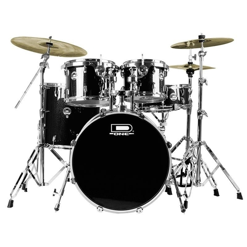
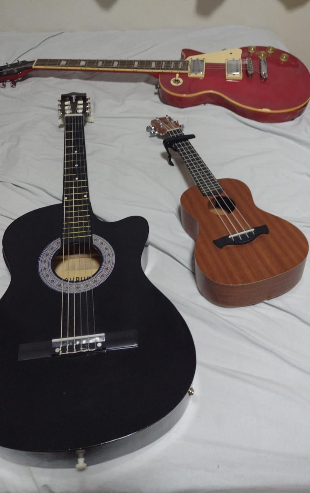

De: Carlos G. M. K. Shikasho
Música
| Quando eu era pequeno, eu ficava em tempo integral na escola, e como consequência eu tinha aulas de música nesse período, foi quando eu conheci a bateria e me apaixonei, porém a relação não durou muito tempo. Estudei por uns 2 anos e parei, isso faz tanto tempo que nem tenho foto da bateria que eu tinha. |  |
|  | Depois me interessei por instrumentos de corda, comecei direto na guitarra, estudei por 3 anos, até hoje toco, e graças as aulas que tive creio ter um conhecimento musical acima da média. Atualmente uso esse conhecimento para não só tocar guitarra,mas também ukulelê e violão. |